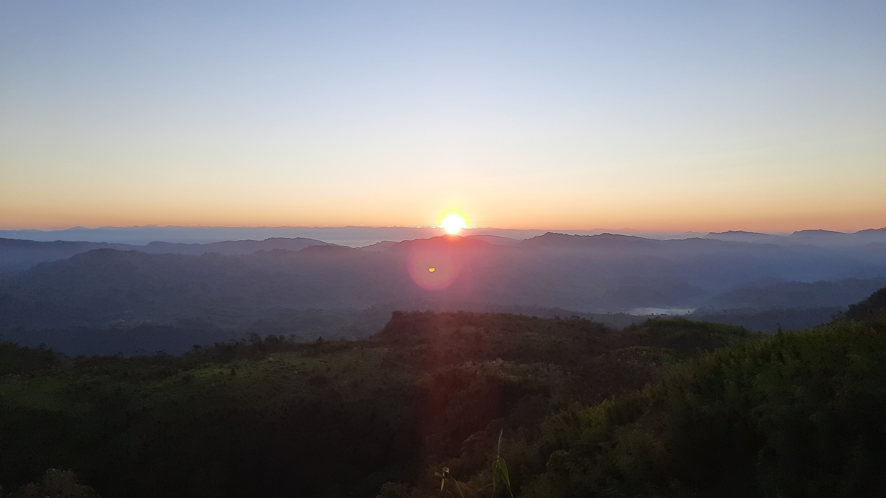
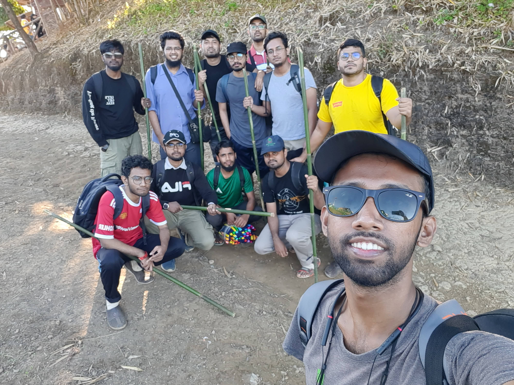
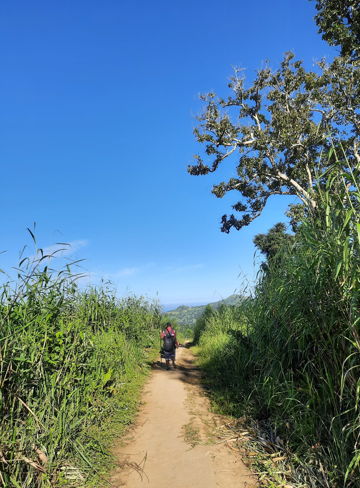
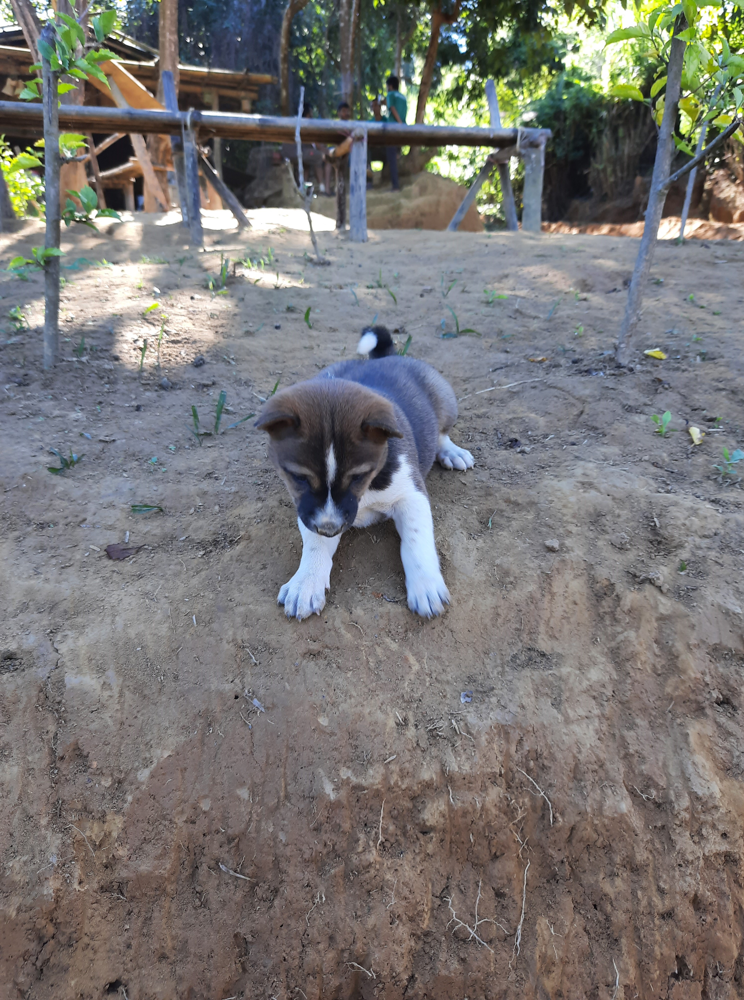
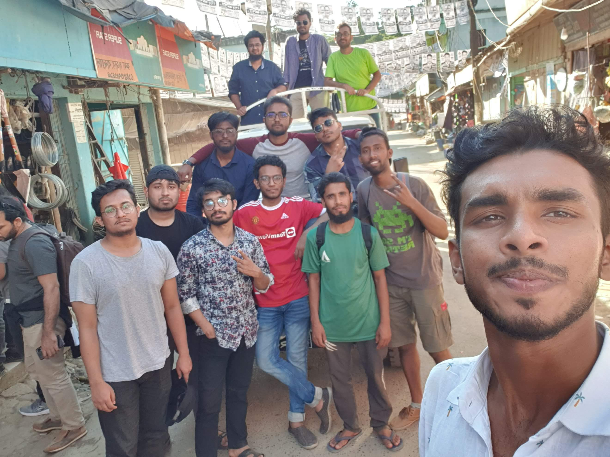

বগালেক-কেওক্রাডং ২০২১ (পর্ব-৩)
19th November, 2021
ঘুম ভেঙে গেল। তখন ভোর সাড়ে পাঁচটা বাজে। উঠে দেখি উষার আলো সরাসরি চোখে এসে লাগছে, আলোর তীব্রতা এত বেশি যে ঘুম আর হলো না। বারান্দাতে বসেই দেখতে লাগলাম। কোথাও কোনো শব্দ নেই, এত নিস্তব্ধ। আস্তে আস্তে সূর্যোদয় হলো। সূর্যের আলো দূর পাহাড় হতে ধীরে ধীরে ভাসিয়ে নিলো আশেপাশের সবকিছু। কিছুক্ষণ বসে উঠে পড়লাম। নিচের পাহাড়গুলোর ভাঁজে ভাঁজে তখন হালকা কুয়াশা আর মেঘের খেলা।

রেডি হতে হতে সেই আগের দিনের মতো লেট হয়ে গেল। আবার আর্মি ক্যাম্পে গিয়ে সাইন আউট করলাম সবাই। সার্জেন্ট থেকে বিদায় নিলাম আমরা। উনি ইলিয়াস ভাইকে কিছু বিছানার চাদর দিলেন। পরে ইলিয়াস ভাই বললেন ক্যাম্পের কিছু কিছু জিনিস আনানেওয়া গাইডের মাধ্যমেই হয়। আগের দিনও গাইডের মাধ্যমে মাংস আনানো হয়েছে।



তারপর আর কি। হাঁটা এবং হাঁটা। কিন্তু এবারের হাঁটায় কষ্ট ছিল কম। উঠার সময় দমের উপর নির্ভর করা লাগে, কষ্ট হয় অনেক বেশি। কিন্তু নামা পুরোটা পায়ের উপরে। ততটা কষ্ট লাগে না। আগেরদিন যেখানে আমাদের সাড়ে ছয় ঘন্টার উপরে সময় লেগেছিল, সেখানে সময় লাগলো মাত্র ৩/৪ ঘন্টার মতো। মাঝে দার্জিলিং পাড়ায় নেমে আমরা খেলাম ব্যাম্বু চিকেন। অস্থির রান্না হয়েছে এইটা। খেয়ে এত স্বাদ পাইলাম আমরা, জবাব নাই কোনো। পথে আবারও আগের মতোই শরবত খেলাম আমরা। বাঁশের চা খেলাম। কখনো বিশ্রাম, কখনো হাঁটা, কখনো ইলিয়াস ভাইয়ের গল্প শোনা। রাতের গল্পের আফসোস ইলিয়াস ভাই বগালেকের গল্প বলে মিটিয়ে দিলেন। তখন দেখলাম নীলচে কালো রংএর প্রজাপতি। রোদের আলোয় যখন ডানা মেলে, অদ্ভূত নীল রং এর ঝিলিক দেয়।
একসময় আমরা দেখলাম বগালেকে চলে এসেছি। কিছুক্ষণ রেস্ট নিলাম। চান্দের গাড়ি আগেই চলে এসেছে।
বিদায় বগালেক। শহরের হতাশা-ধুলামাখা জীবন থেকে বাঁচতে একটুখানি আশা দেখানো স্বর্গ থেকে আমরা তখন নিচে নামছি। আবার সেই আগের মতোই রোলার কোস্টার। এবার সবাই দাঁড়িয়ে পড়লাম। গলা ছেড়ে দিলাম, যে গানই আসে, কমেডি প্যারোডি কিছুই বাদ নাই গাইতে থাকলাম সবাই। পথে রূমা বাজারে ইলিয়াস ভাইকে সবাই বিদায় জানালাম। ভাইও আবেগ ধরে রাখতে পারলেন না। বললেন আমাদের খুব মিস করবেন। আমরা আর কি বলব, ২ টা দিনের ক্ষুদ্র সময়ে তিনিও কতখানি দাগ কাটলেন। আবার হয়তো দেখা হবে নতুন কোনো ভ্রমণে।

শৈলপ্রপাত হয়ে আমরা যখন শহরে ঢুকলাম তখন সন্ধ্যা হয়ে গেছে। সাড়ে নয়টায় বাস। ততক্ষণে পেছনে ফেলে এসেছি অনেকগুলো পাহাড়, সাঙ্গু নদী, নাম না জানা গহীন জঙ্গল আর পাহাড়ি জীবনযাপন। আবারও ঢুকে যেতে হবে শত কৃত্রিমতার ভীড়ে। জীবন যেখানে যেমন।
25th November, 2021